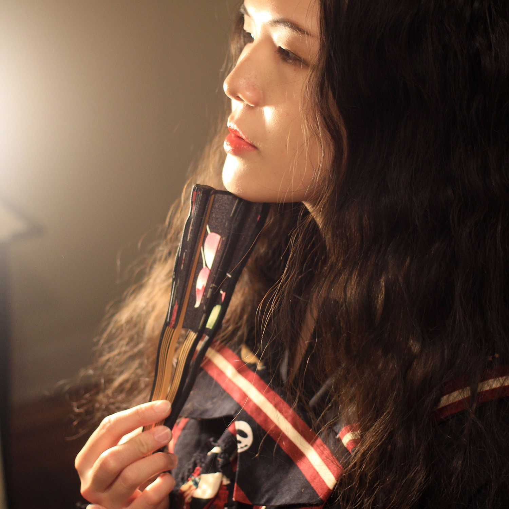

About Me

An engineer who doesn't want to handle coding is not a qualified calligrapher.
So according to the paragraph above you can figure out a few facts: the girl in the image is (previously?) an engineer, meanwhile doing something like coding. But "calligrapher", well, I have to admit that claiming myself in this way is too ambitious, I'm just an amateur of Chinese calligraphy, a homesick individual in the country a whole Pacific Ocean away from her residential city.
If I have to use only one word to describe myself, that word should be "non-traditional".
Wanna know more? Try digging in this website :p
Connect with Me